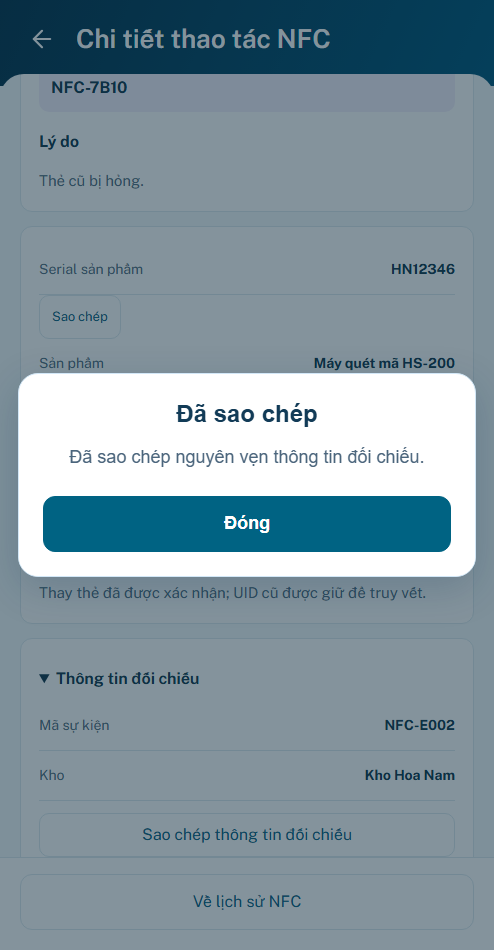

P22 r02 · Sáu nâng cấp UI/UX
Đã áp dụng theo yêu cầu; hình thức chờ bạn review. Backend event NFC chưa xác minh. Giữ4panel, khung494×950, footerLOCK, HomeP12 và hub không shortcut phiếu dở.
Mở preview · Báo cáo & bằng chứng · Nguồn quyết định
minhanh / preview → Lịch sử → NFC. Chọn Mẫu B22 trong bộ mô phỏng ngoài khung. “Lần tải lại” cho thử lỗi/chậm cùng dữ liệu; mặc định chưa có nguồn vẫn hiện unavailable.
Danh sách: +97px vùng đọc
Dock303→206px; vùng list480→577px. Cùng494×950/DPR1, thấy3thẻ đầy đủ thay vì2. Search/tabs cố định; ngày và count một hàng. Không thay đổi viewport hoặc thu nhỏ app để đo.
Lọc độc lập / Vừa xem
× từ khóa giữ ngày và loại; chip bỏ riêng. Marker theo event ID, Back giữ cuộn/focus.
Thẻ trước → Thẻ thay thế
UID cũ/mới có nhãn, lý do ngay dưới. Đối chiếu mở rộng trong cùng panel; không suy dữ liệu thiếu.


Tải lại / Sao chép khi lỗi
Kết quả lần đọc trước vẫn giữ và được ghi rõ. Copy lỗi có nội dung nguyên vẹn để đọc/chọn, không toast/chồng overlay.
Nghiệm thu tách biệt
83test logic;24nhóm trình duyệt;20layout panel +10layout dài;4viewport footer. Behavior đạt trong prototype, chưa phải tích hợp production/clipboard thiết bị thật. Hình thức cần bạn review. Không push/merge/deploy.
S01 giữ hub · S04 chưa có nguồn · Kiểm UX